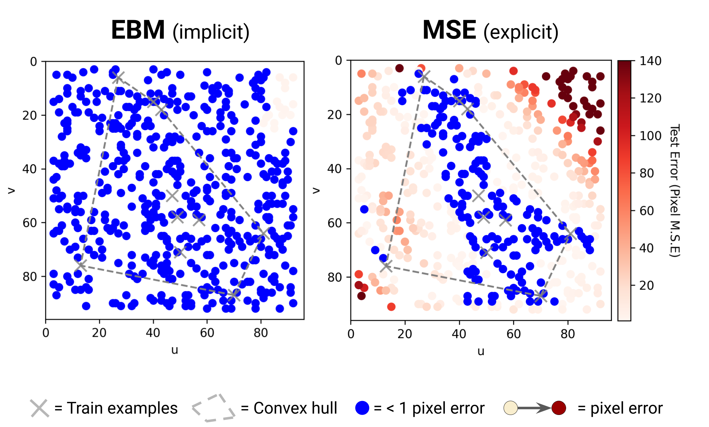

Abstract. We find that across a wide range of robot policy learning scenarios, treating supervised policy learning with an implicit model generally performs better, on average, than commonly used explicit models. We present extensive experiments on this finding, and we provide both intuitive insight and theoretical arguments distinguishing the properties of implicit models compared to their explicit counterparts, particularly with respect to approximating complex, potentially discontinuous and multi-valued (set-valued) functions. On robotic policy learning tasks we show that implicit behavioral cloning policies with energy-based models (EBM) often outperform common explicit (Mean Square Error, or Mixture Density) behavioral cloning policies, including on tasks with high-dimensional action spaces and visual image inputs. We find these policies provide competitive results or outperform state-of-the-art offline reinforcement learning methods on the challenging human-expert tasks from the D4RL benchmark suite, despite using no reward information. In the real world, robots with implicit policies can learn complex and remarkably subtle behaviors on contact-rich tasks from human demonstrations, including tasks with high combinatorial complexity and tasks requiring 1mm precision.
Highlights
Implicit models ❤️ discontinuities.
Real-world slide-then-insert task
with 1-mm precision.
Real-world sorting task
with combinatorial multimodality.
Precise cloning of
switching behaviors.
(shown: "2D Particle" task)
State-of-the art results on D4RL human-expert tasks.
(shown: "door-human-v0" task)
Works with high-dimensional observations and inputs.
(shown: "Bi-Manual Sweeping")
Paper
Latest version (Sep 1, 2021): arXiv:2109.00137 [cs.RO].
Published at the Conference on Robot Learning (CoRL) 2021
Policy Learning Results
Real World Tasks: We find Implicit BC policies can work especially well in the real world, including 10x better on a precise insertion task (with only input as an RGB image at 5 Hz).
Implicit BC policy on a precise, 1-millimeter-tolerance
slide-then-insert task: push a block across a table, then slide it into a slot.
Below is a representative comparison on this insertion task:
Implicit BC (ours)
Explicit BC (baseline)
And many examples of different IBC rollouts -- note the diversity of trajectories:
Implicit BC (ours)
These policies can be robust in the real world, despite disturbances. (this is on the "Sorting" task: sort the 4 blue blocks from the 4 yellow blocks, in arbitrary order).
Implicit BC policy on a sort-blue-from-yellow task with a high amount of multimodality
due to the combinatorially large number of valid orderings.
On this sorting task, here is a representative comparison:
Implicit BC (ours)
Explicit BC (baseline)
Below are several additional comparisons on various simulated tasks. See the paper for more analysis and interpretation on the different aspects highlighted by these comparisons.
"Particle" Task: agent (black dot) should move to the green dot, then the blue dot.
Implicit BC (ours)
Explicit BC (baseline)
"Planar Sweeping" Task: agent (stick) should sweep all particles into the target region.
Implicit BC (ours)
Explicit BC (baseline)
"Bi-Manual Sweeping" Task: agent (two robot arms) should sweep all particles into the two bowls.
Implicit BC (ours)
Explicit BC (baseline)
"D4RL (Adroit) Door" Task: agent (robot hand) should open the door.
Implicit BC (ours)
Explicit BC (baseline)
"D4RL (Adroit) Pen" Task: agent (robot hand) should orient the pen.
Implicit BC (ours)
Explicit BC (baseline)
Generalization, Discontinuities, and Multimodality
We highlight in particular three properties of implicit models vs. their explicit counterparts.
For generalization, implicit models empirically show intriguingly different generalization properties compared to explicit counterparts, which in certain cases can be advantageous, for example in this coordinate regression task:

In a canonical coordinate regression task, implicit models generalize well from just a few examples (shown above is 10 training examples), whereas explicit models struggle. (See Paper for more details).
For discontinuities, the following animation illustrates training an implicit (top) vs. explicit (bottom) model on a simple Heaviside step function.
(above) Implicit MLP trained as an EBM.
(above) Explicit MLP trained with Mean Square Error.
For approximating multi-valued functions and/or conditional multi-modal distributions, implicit models benefit from unconstrained flexibility.
Comparison of implicit (top) fitting of multi-valued functions compared to an example explicit model (bottom), using mixture-of-gaussian regression ("Mixture Density Network").
Code
Code is available on Github! Includes:
• Simulation environments: Particle, Simulated Robot, D4RL tasks.
• Downloadable data for tasks.
• IBC implementation (Langevin and DFO).
• MSE and MDN baselines.
• Configurations for trainings.
• 10-minute Quickstart.
Bibtex
title={Implicit Behavioral Cloning},
author={Florence, Pete and Lynch, Corey and Zeng, Andy and Ramirez, Oscar and Wahid, Ayzaan and Downs, Laura and Wong, Adrian and Lee, Johnny and Mordatch, Igor and Tompson, Jonathan},
journal={Conference on Robot Learning (CoRL)},
year={2021}
}
Team


Robotics at Google
Acknowledgements
Special thanks to Vikas Sindhwani for project direction advice; Steve Xu, Robert Baruch, Arnab Bose for robot software infrastructure; Jake Varley, Alexa Greenberg for ML infrastructure; and Kamyar Ghasemipour, Jon Barron, Eric Jang, Stephen Tu, Sumeet Singh, Jean-Jacques Slotine, Anirudha Majumdar, Vincent Vanhoucke for helpful feedback and discussions.